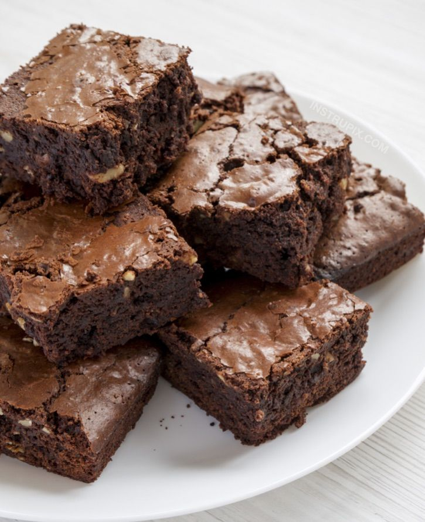

Ingredientes
- 200g de chocolate meio amargo
- 150g de manteiga
- 3 ovos
- 200g de açúcar
- 100g de farinha de trigo
- 1 colher de chá de essência de baunilha
- 1 pitada de sal
- 100g de nozes (opcional)
Modo de Preparo
- Pré-aqueça o forno a 180°C.
- Derreta o chocolate e a manteiga juntos em banho-maria ou no micro-ondas.
- Em uma tigela, bata os ovos com o açúcar até obter uma mistura cremosa.
- Adicione o chocolate derretido à mistura de ovos e açúcar e misture bem.
- Peneire a farinha de trigo e o sal e adicione à mistura, mexendo até ficar homogêneo.
- Se desejar, acrescente as nozes picadas à massa.
- Despeje a massa em uma forma untada e leve ao forno por cerca de 25 a 30 minutos. Faça o teste do palito: ele deve sair com algumas migalhas úmidas.
- Deixe esfriar antes de cortar em pedaços e servir.
